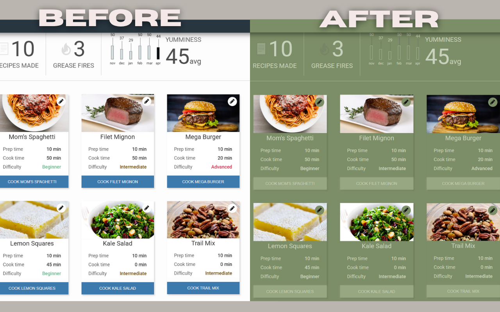
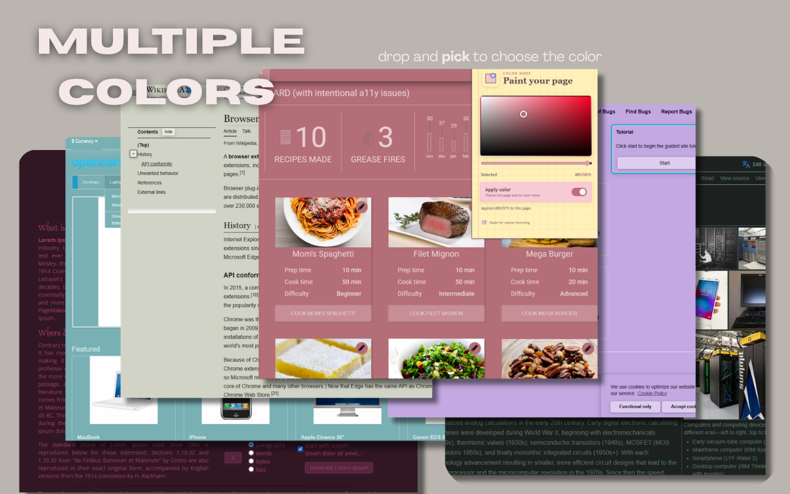
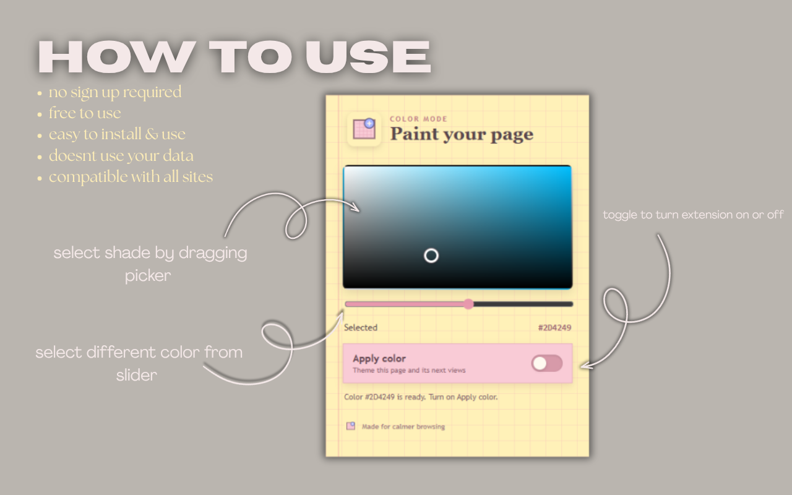

Choose your color
Pick from the full color spectrum and choose the shade that fits your mood, task, or preference.
A different way to browse
Black and white don't have to be your only choices. ColorShift lets you choose the color that makes the web feel right to you.
WHY COLORSHIFT?
Maybe warm brown feels better when you're reading. Maybe green feels calmer. Maybe you simply want something different from another black screen. Pick a color and make the web yours.
SEE THE DIFFERENCE

Pick from the full color spectrum and choose the shade that fits your mood, task, or preference.
Drag through the picker and watch the webpage change immediately. No Apply button. No complicated settings.
ColorShift creates related shades for backgrounds, surfaces, borders and text so the page remains readable.
Disable ColorShift and the injected theme is removed, returning the webpage to its original appearance.
MULTIPLE COLORS
A browser theme should give you options. Try a soft green, a warm earth tone, a muted rose, or any color you want.

HOW TO USE
Click the ColorShift icon from your Chrome toolbar.
Drag the picker and hue slider until the page feels right.
Keep the theme on, or toggle it off whenever you want.

PRIVACY
ColorShift is designed to work locally in your browser. It does not require an account and does not send webpage content to an external server.
Read the privacy policy →MAKE THE WEB YOURS